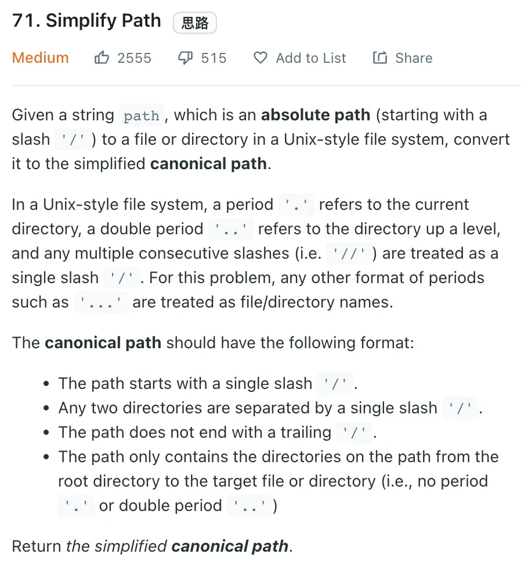
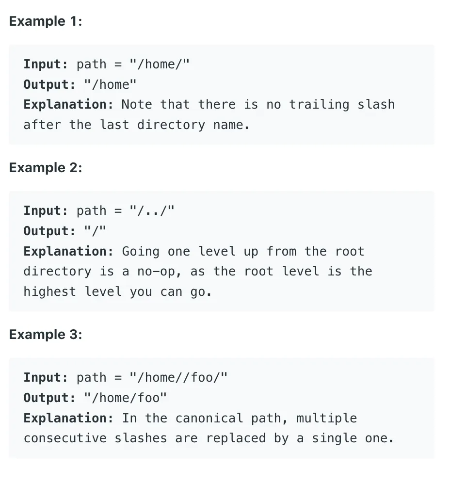

71. Simplify Path
考過的公司：Asked by: Bytedance
Question


✍🏽 My Solution
Runtime: 17 ms, faster than 15.38% of Java online submissions for Simplify Path.
Memory Usage: 44.9 MB, less than 17.94% of Java online submissions for Simplify Path.
class Solution {
public String simplifyPath(String path) {
String[] parts = path.split("/");
Stack<String> stack = new Stack<>();
for (String part : parts) {
if (part.isEmpty() || part.equals(".")) {
continue;
}
if (part.equals("..")) {
if (!stack.isEmpty()) {
stack.pop();
}
continue;
}
stack.push(part);
}
String res = "";
while (!stack.isEmpty()) {
res = "/" + stack.pop() + res;
}
return res.isEmpty() ? "/" : res;
}
}
🧠 Thought Process
- Why did I choose this particular implementation?
首先得的思想是以'/'来作为分隔符，分割成String數組，名為word- word有可能出現的字符為：數字、英文、或_的目錄名，一個點，兩個點，空字符串
- What is the time/space complexity of my solution? How do I know?
- time : O(n)
- space: O(n)